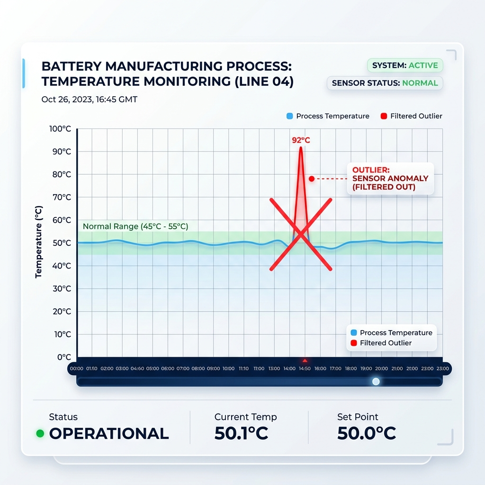
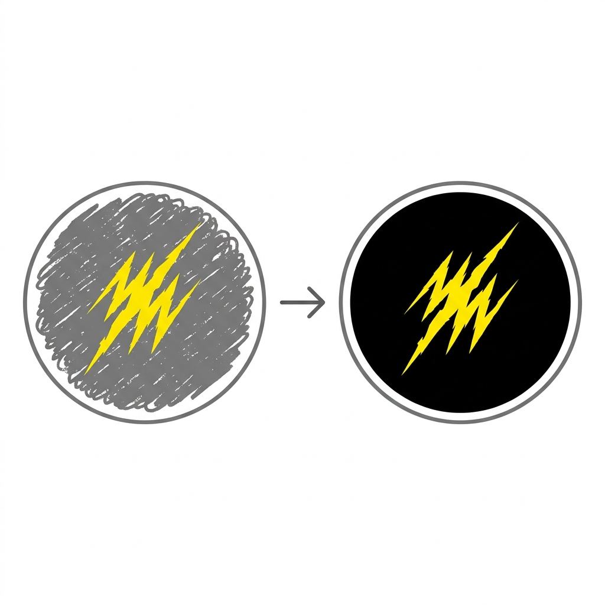

"Numpy의 핵심은 데이터를 격자 모양의 배열로 아주 빠르고 효율적으로 처리하는 거야 껄껄! 차원(Dimension)에 따라 부르는 이름이 다르다무새."
| 차원 (Dimension) | 이름 | 예시 | 파이썬 코드 |
|---|---|---|---|
| 0D (Scalar) | 단일 값 (점) | 5 |
np.array(5) |
| 1D (Vector) | 선 형태 (1줄) | [1, 2, 3] |
np.array([1, 2, 3]) |
| 2D (Matrix) | 면 형태 (행/열 표) | [[1, 2], [3, 4]] |
np.array([[1, 2], [3, 4]]) |
| 3D (Tensor) | 입체 형태 (큐브) | [[[1, 2]], [[3, 4]]] |
np.array([[[1, 2]], [[3, 4]]]) |
각 차원의 위치(인덱스)를 사용해서 원하는 데이터를 콕 집어 가져오는 방법이야. 행(Row)과 열(Column) 순서대로 접근하면 된다무새!
import numpy as np # 2차원 행렬 생성 (2행 3열) matrix = np.array([ [10, 20, 30], [40, 50, 60] ]) # 1행 2열 데이터 가져오기 (인덱스는 0부터 시작하므로 0행, 1열) val = matrix[0, 1] print(val) # 출력: 20
조건식을 주어 원하는 데이터만 쏙쏙 골라내는 아주 강력한 기능이야! 데이터를 분석할 때 불필요한 노이즈를 제거하거나, 특정 조건에 맞는 데이터만 걸러낼 때 정말 많이 쓰이지무새!
import numpy as np # 나이 데이터가 담긴 배열 ages = np.array([15, 22, 18, 30, 12, 25]) # 20살 이상인 데이터만 걸러내기 adults = ages[ages >= 20] print(adults) # 출력: [22 30 25]
데이터 분석과 AI 모델 설계 시 데이터의 구조(행과 열의 개수)인 shape를 변형하는 일이 정말 많아무새!
.shape: 현재 배열이 몇 행 몇 열인지 확인하는 속성.reshape(): 데이터 내용은 유지한 채 배열의 모양(차원)을 바꾸는 함수.flatten(): 다차원 배열을 1차원(1줄)으로 일렬로 쫙 펴주는 함수# 1차원 배열(원소 6개)을 2행 3열의 2차원 배열로 변경 arr_1d = np.array([1, 2, 3, 4, 5, 6]) arr_2d = arr_1d.reshape(2, 3) print(arr_2d.shape) # 출력: (2, 3) # 다시 1차원으로 납작하게 펴기 flat_arr = arr_2d.flatten() print(flat_arr) # 출력: [1 2 3 4 5 6]
배터리 소재(양극재/음극재) 생산과 품질을 책임지는 포스코퓨처엠 현장에서는 Numpy 조건부 인덱싱이 다음과 같이 강력하게 쓰인다무새!
valid_temp = temp[temp < 1500] 한 줄로 깔끔하게 걷어냅니다. 노이즈 없는 깨끗한 데이터만이 정확한 수율 분석의 첫걸음입니다.

defect_images = images[defect_score >= 0.8] 조건식을 통해 초기 학습 효율을 극대화합니다.
둘째, 비전 이미지 데이터 자체의 전처리(마스킹)입니다. 현미경 촬영 이미지(다차원 배열)에서 불필요한 어두운 배경 노이즈를 일괄적으로 까맣게 지우려면 image[image < 50] = 0 한 줄의 코드로 픽셀 값을 조건부 제어할 수 있습니다.

danger_batch = batch[predicted_yield < 95.0] 조건식을 사용합니다. 이를 통해 골든타임 내에 공정 파라미터를 자동 조정하고 대규모 불량을 미리 예방할 수 있습니다.